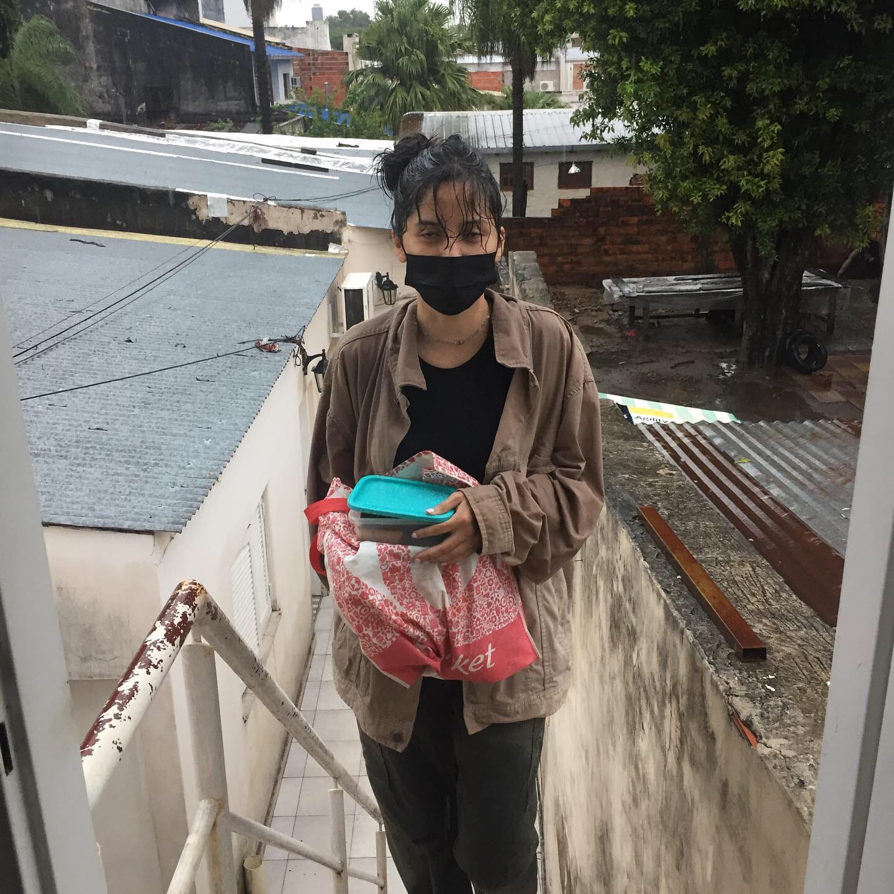
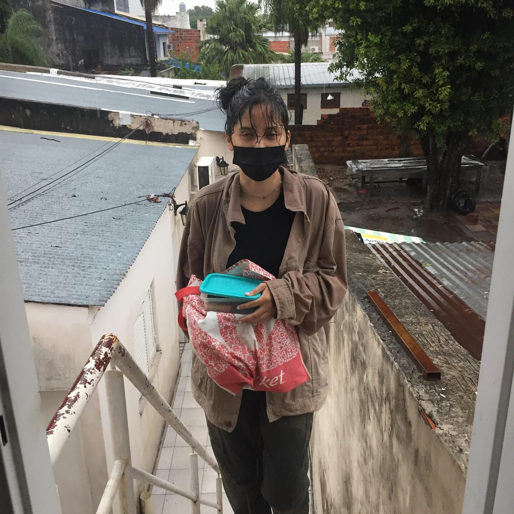

"Sophias Hermosourus - La flor mas bella del mundo
Había una vez un jardín mágico donde crecían flores de todas las formas y colores. En el centro de ese paraíso vivía una flor llamada Sofía, conocida por todos como la más bella del mundo. Su delicado aroma llenaba el aire y sus pétalos brillaban con un destello único bajo el sol.
Todos los días, las otras flores la admiraban desde lejos, pero ninguna se atrevía a acercarse. Sofía, aunque sabía de su belleza, se sentía sola en su perfección. Un día, una pequeña y tímida margarita llamada Tomás comenzó a visitarla en las noches, cuando el jardín estaba en silencio. Tomás no era la más colorida ni la más alta, pero su simplicidad tenía algo especial.
A medida que las noches pasaban, Sofía y Tomás comenzaron a compartir historias, sueños y risas. Él la veía más allá de su apariencia, y Sofía descubrió que lo que realmente la hacía especial no eran sus pétalos brillantes, sino el amor sincero que había comenzado a florecer entre ellos.
En ese jardín mágico, todos los ojos seguían posados en la deslumbrante Sofía, pero solo Tomás conocía el verdadero secreto de su belleza: su corazón. Y así, la flor más bella del mundo encontró el amor más puro y simple en una pequeña margarita que la amaba por quien realmente era.
 
